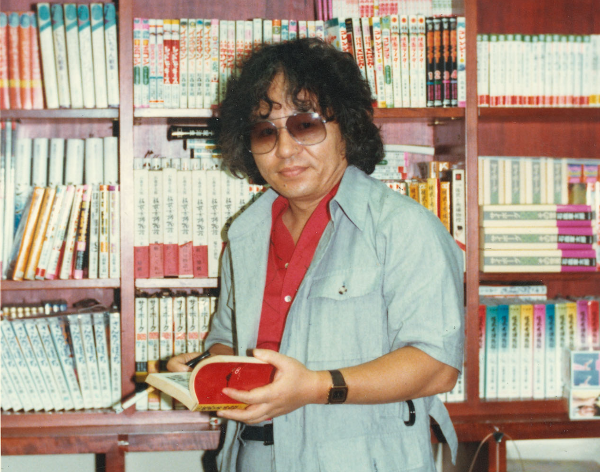
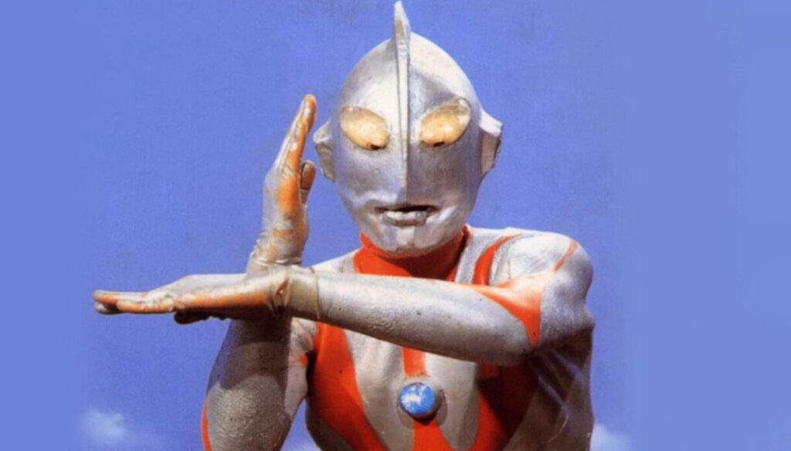
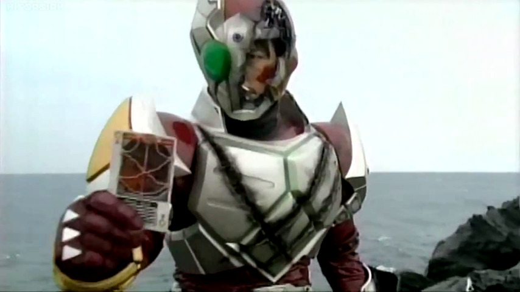
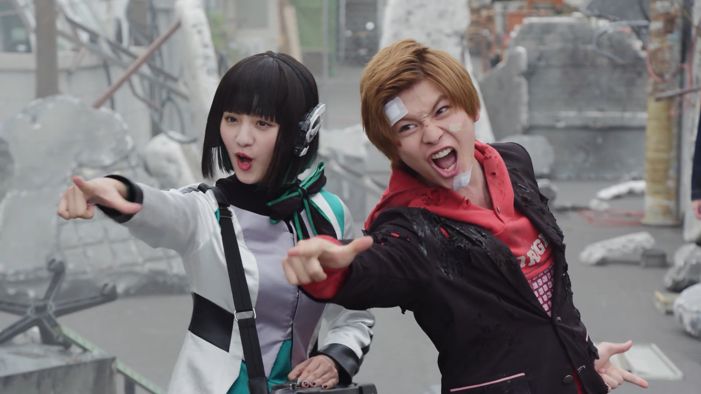
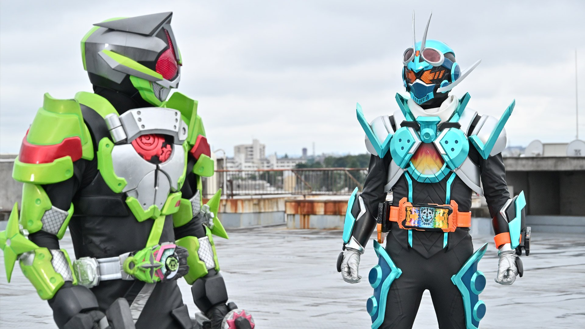

Introduction: The Legacy of Kamen Rider
Kamen Rider is more than a television series — it is a cornerstone of Japanese tokusatsu culture.
Since its debut, the franchise has combined masked heroes, practical effects, and social themes
to create a unique form of televised heroism.
Across different eras, Kamen Rider has evolved alongside society and technology,
while preserving its core ideals of transformation, justice, and hope.
This history explores how the series grew from a single experiment into a lasting cultural legacy.
The Birth of Kamen Rider and the Golden Age of Tokusatsu
(1971–1989 | Showa Era)
Kamen Rider debuted in 1971, created by Shotaro Ishinomori,
and quickly became one of the most iconic hero franchises in Japanese tokusatsu culture.
The Showa era established the core concept of the “modified human hero”,
portraying Riders who were forcibly transformed and chose to fight evil organizations despite their tragic fate.

石森章太郎 Shotaro Ishinomori

Kamen Rider 1 rider kick
Most Showa-era series focused on a single Rider, presented through weekly television broadcasts.
During this period, foundational elements such as transformation belts, finishing moves, and monster organizations were firmly established.
In terms of production, these works relied heavily on practical effects, including suit acting, real-location filming, miniature sets, and explosive stunts,
creating a raw and physical sense of action unique to tokusatsu.

Ultraman franchise (1966-)

Super Sentai franchise (1975-)
Alongside series such as Ultraman and the Super Sentai franchise, Kamen Rider became a cornerstone of Japan’s tokusatsu golden age,
shaping children’s television and popular culture for generations.
Series Revival and Narrative Maturity
(2000–2009 | Heisei Phase 1)
After a hiatus in the 1990s, Kamen Rider was reborn in 2000 with Kamen Rider Kuuga, marking a major revival of the franchise.
Heisei Phase 1 introduced a more mature and grounded storytelling style, moving beyond simple good-versus-evil conflicts to explore
personal growth, inner struggle, and the burden of becoming a hero.

Kamen Rider Knight & Ryuki

Kamen Rider Faiz vs Orphnoch
Riders of this era were often portrayed as lonely figures,
fighting not only external enemies but also their own doubts, responsibilities, and sense of identity.
Production techniques evolved significantly, incorporating digital effects, cinematic framing, and more realistic action choreography,
allowing Kamen Rider to transition from a children’s program into a series appealing to a broader, all-ages audience.

Kamen Rider Garren

Arata Kagami
This phase laid the narrative and thematic foundation for modern Kamen Rider, redefining the franchise for the 21st century.
The Era of Multiple Riders and Cross-Media Expansion
(2010–Present | Heisei Phase 2 & Reiwa Era)
From 2010 onward, Kamen Rider entered an era defined by multiple Riders and ensemble storytelling.
Rather than focusing solely on a single hero, the series began exploring complex relationships between
allies, rival Riders, and opposing factions within shared and interconnected worlds.

Kamen Rider Wizard henshin

Kamen Rider Brave, Ex-Aid, Snipe & Lazer
Thematically, modern Kamen Rider delves into technology and humanity, artificial intelligence, social systems, identity, and free will,
reflecting the challenges and anxieties of contemporary society.
Visually and narratively, the series adopted faster pacing, sharper aesthetics, and bold experimental concepts,
pushing the boundaries of traditional tokusatsu.

Is & Aruto Hiden

Kamen Rider Tycoon(from Geats) & Kame Rider Gotchard
At the same time, the franchise expanded beyond television into films, OVAs, streaming series, and animated adaptations,
forming a rich cross-media narrative ecosystem.
These expansions and special projects transformed Kamen Rider from a simple annual TV series into a continually evolving franchise .
capable of reinventing the meaning of heroism
Franchise Overview
Since 1971, Kamen Rider has evolved from a single experimental television series into a multi-generational tokusatsu franchise spanning television, film, streaming, and animation.
While each era reflects its own cultural context and creative direction, the franchise consistently centers on themes of transformation, sacrifice, justice, and the struggle between humanity and power.
By balancing tradition with reinvention, Kamen Rider continues to redefine what a hero can be — across time, media, and generations.